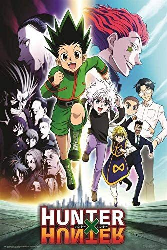

Since the death of his parents, Shinpei Ajiro had lived with the Kofune family and their two daughters—Mio and Ushio. Although he then left his home island to continue his education in Tokyo, Shinpei returns after Ushio tragically drowns during the attempted rescue of a little girl.
During the funeral, his best friend informs him about bruises found around Ushio's neck, casting doubt over the cause of her death. Suspecting a murder has taken place, Shinpei reevaluates recent events, but strange incidents only continue to transpire. Disappearing people and other unexplainable occurrences lead Mio to recall an old folktale referring to entities called "Shadows," which may not be entirely fantasy. Supposedly, an encounter with one's Shadow foretells the person's impending demise. Facing the dark side of Hitogashima Island, Shinpei stands against his grim fate to fulfill Ushio's final will—to protect Mio.
Ever since the death of his father, the burden of supporting the family has fallen upon Tanjirou Kamado's shoulders. Though living impoverished on a remote mountain, the Kamado family are able to enjoy a relatively peaceful and happy life. One day, Tanjirou decides to go down to the local village to make a little money selling charcoal. On his way back, night falls, forcing Tanjirou to take shelter in the house of a strange man, who warns him of the existence of flesh-eating demons that lurk in the woods at night.
When he finally arrives back home the next day, he is met with a horrifying sight—his whole family has been slaughtered. Worse still, the sole survivor is his sister Nezuko, who has been turned into a bloodthirsty demon. Consumed by rage and hatred, Tanjirou swears to avenge his family and stay by his only remaining sibling. Alongside the mysterious group calling themselves the Demon Slayer Corps, Tanjirou will do whatever it takes to slay the demons and protect the remnants of his beloved sister's humanity.
Idly indulging in baseless paranormal activities with the Occult Club, high schooler Yuuji Itadori spends his days at either the clubroom or the hospital, where he visits his bedridden grandfather. However, this leisurely lifestyle soon takes a turn for the strange when he unknowingly encounters a cursed item. Triggering a chain of supernatural occurrences, Yuuji finds himself suddenly thrust into the world of Curses—dreadful beings formed from human malice and negativity—after swallowing the said item, revealed to be a finger belonging to the demon Sukuna Ryoumen, the "King of Curses."
Yuji experiences first-hand the threat these Curses pose to society as he discovers his own newfound powers. Introduced to the Tokyo Metropolitan Jujutsu Technical High School, he begins to walk down a path from which he cannot return—the path of a Jujutsu sorcerer.

Hunters devote themselves to accomplishing hazardous tasks, all from traversing the world's uncharted territories to locating rare items and monsters. Before becoming a Hunter, one must pass the Hunter Examination—a high-risk selection process in which most applicants end up handicapped or worse, deceased.
Ambitious participants who challenge the notorious exam carry their own reason. What drives 12-year-old Gon Freecss is finding Ging, his father and a Hunter himself. Believing that he will meet his father by becoming a Hunter, Gon takes the first step to walk the same path.
During the Hunter Examination, Gon befriends the medical student Leorio Paladiknight, the vindictive Kurapika, and ex-assassin Killua Zoldyck. While their motives vastly differ from each other, they band together for a common goal and begin to venture into a perilous world.
Centuries ago, mankind was slaughtered to near extinction by monstrous humanoid creatures called Titans, forcing humans to hide in fear behind enormous concentric walls. What makes these giants truly terrifying is that their taste for human flesh is not born out of hunger but what appears to be out of pleasure. To ensure their survival, the remnants of humanity began living within defensive barriers, resulting in one hundred years without a single titan encounter. However, that fragile calm is soon shattered when a colossal Titan manages to breach the supposedly impregnable outer wall, reigniting the fight for survival against the man-eating abominations.
After witnessing a horrific personal loss at the hands of the invading creatures, Eren Yeager dedicates his life to their eradication by enlisting into the Survey Corps, an elite military unit that combats the merciless humanoids outside the protection of the walls. Eren, his adopted sister Mikasa Ackerman, and his childhood friend Armin Arlert join the brutal war against the Titans and race to discover a way of defeating them before the last walls are breached.

Source: All the summaries are from the website MyAnimeList